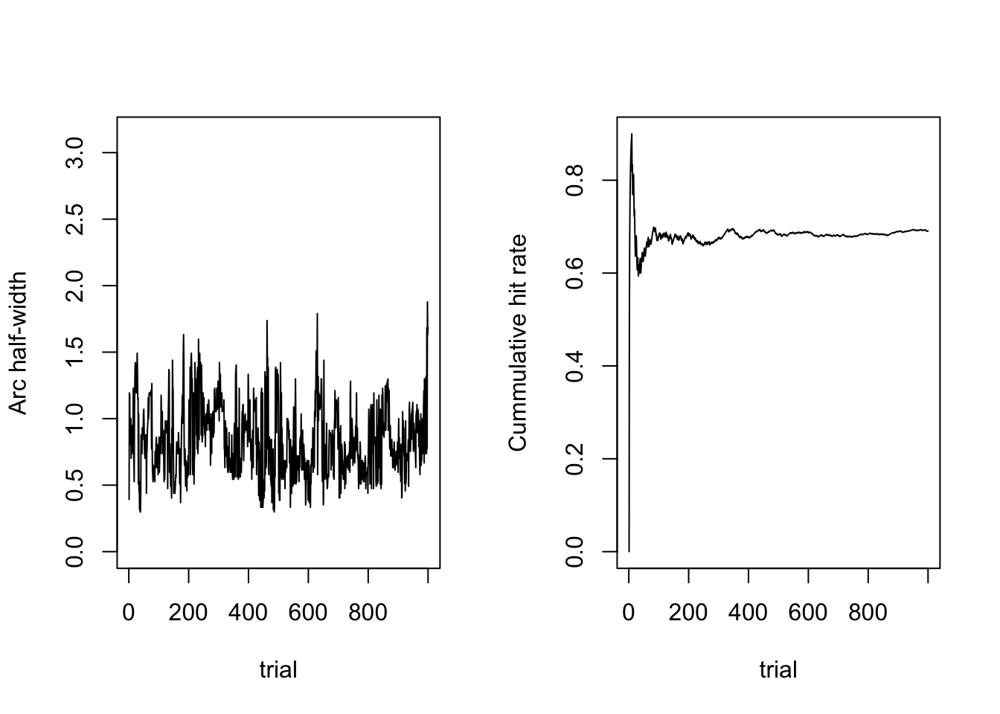
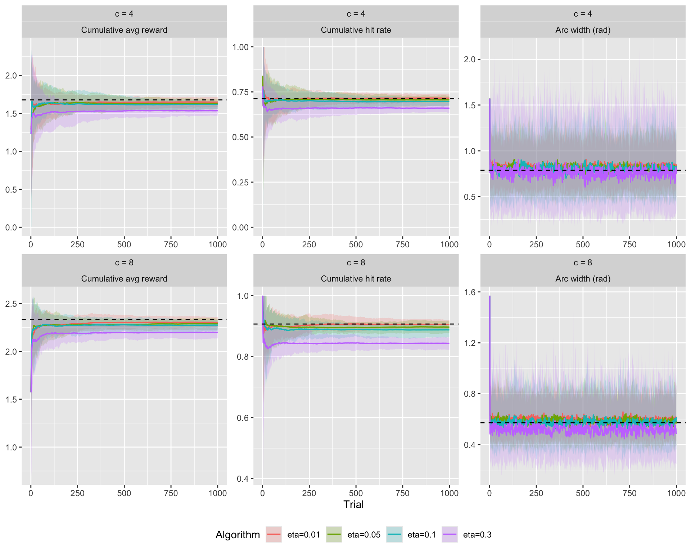
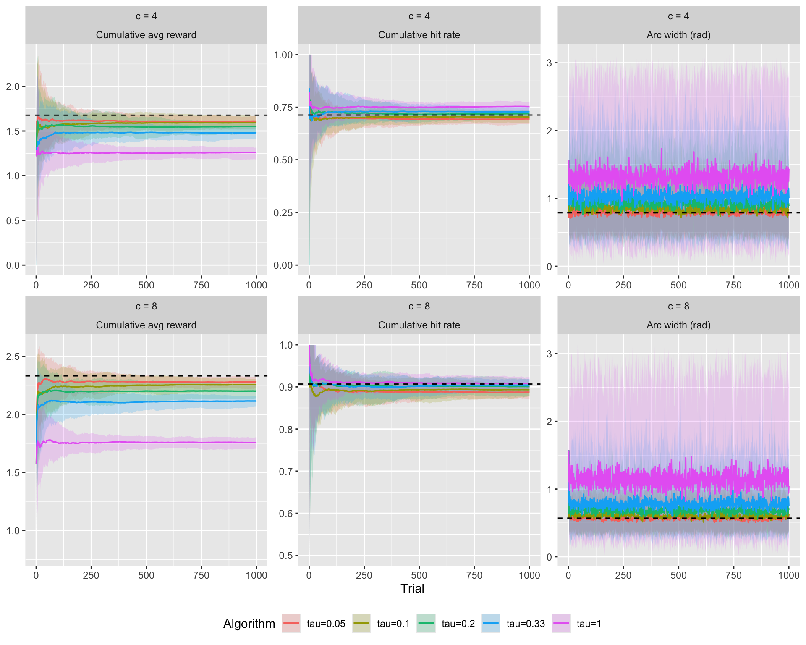
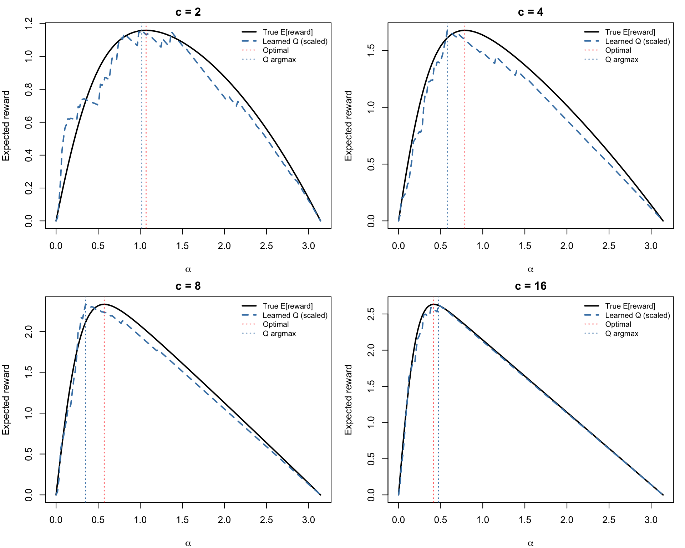
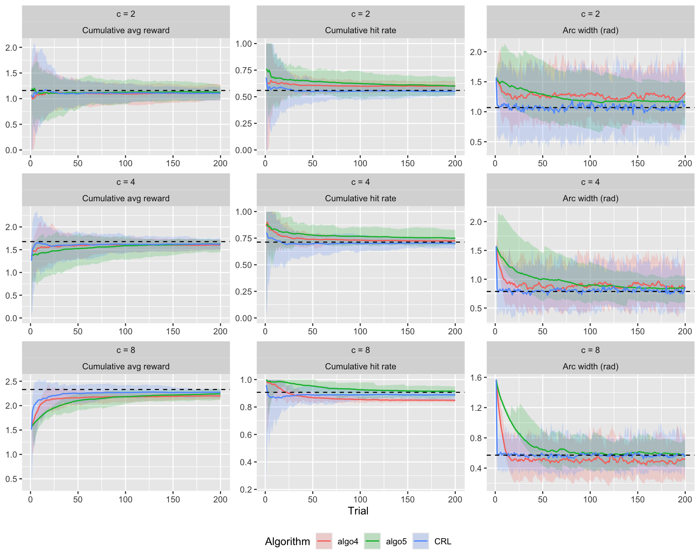
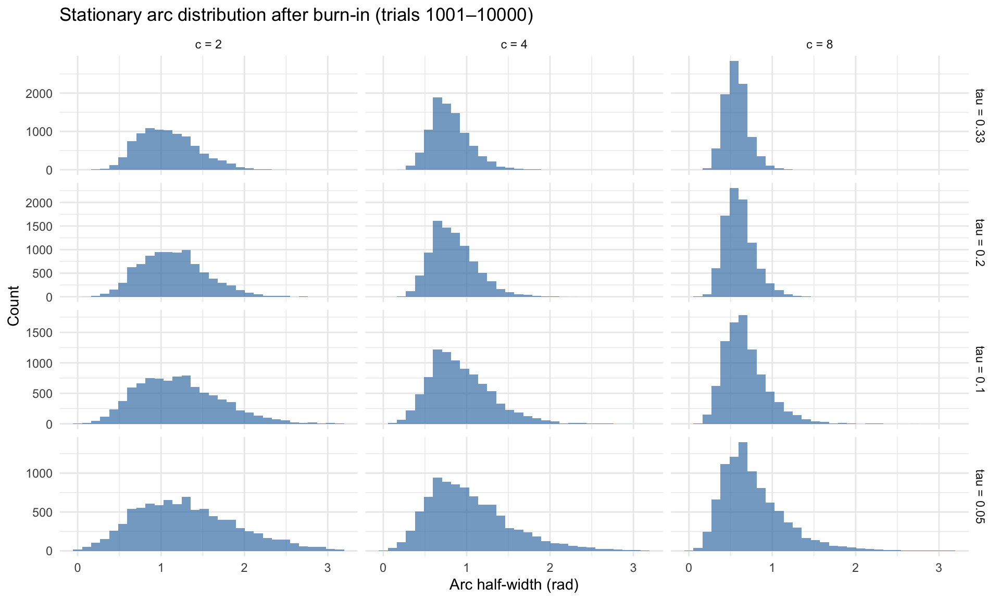
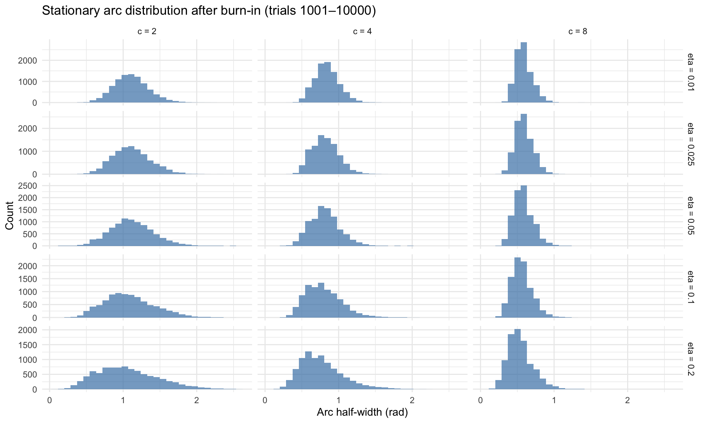

Counterfactual Q-Learning for Arc Width
This notebook builds on the reinforcement learning exploration in RL Algorithms. It introduces a Counterfactual Q-Learning (CRL) agent that learns a full value function over the arc-width action space, rather than applying local update heuristics.
Model Overview
Previous algorithms (algo4, algo5) use local update rules — they adjust the current arc based only on whether the last trial was a hit or miss (and by how much). The Counterfactual Reinforcement Learning (CRL) agent takes a fundamentally different approach: it maintains a value estimate \(Q(\alpha)\) for every possible arc width, and updates all of them on every trial.
Why “counterfactual”?
After observing the response error \(y_t\), the agent knows the true target location. This means it can compute the reward it would have received for any arc width \(\alpha\), not just the one it chose. This is the counterfactual: “what if I had set my arc to \(\alpha\)?”
Discretization
The continuous action space \([0, \pi]\) is discretized into \(N\) equally spaced values \((0, \pi/N, 2\pi/N, \dots, z_k, \dots, \pi)\) where \(z_k = k\,\pi/N\)
Update rule
After observing error \(y_t\), the agent updates the value of all arc widths:
\[ Q_{t+1}(k) = Q_t(k) + \eta \Big[ \underbrace{(\pi - z_k) \cdot \mathbb{I}(|y_t| \le z_k)}_{\text{counterfactual reward}} - Q_t(k) \Big] \]
- If \(|y_t|\) was small (precise memory), small arcs \(z_k \ge |y_t|\) get a large positive signal.
- If \(|y_t|\) was large (poor memory), small arcs \(z_k < |y_t|\) get a signal of 0 (missed target), driving their value down.
Action selection (softmax)
The agent selects the next arc width from a softmax policy over Q-values:
\[ P(\alpha_t = z_k \mid Q_t) = \frac{\exp(Q_t(k) / \tau)}{\sum_{j=1}^N \exp(Q_t(j) / \tau)} \]
where \(\tau\) is the temperature parameter — lower values make the policy more greedy (deterministic), higher values more exploratory (uniform).
Parameters
| Parameter | Description | Range |
|---|---|---|
| \(\eta\) | Learning rate | \((0, 1]\) |
| \(\tau\) | Temperature (softmax) | \((0, \infty)\) |
Single Run Demonstration
A single run with moderate learning rate and temperature:
algo_crl(eta = 0.1, tau = 0.05) |>
run_arc_algorithm(n_trials = 1000, c = 4, init_arc = pi/8) |>
plot_algorithm_run()
Effect of Learning Rate (\(\eta\))
ribbon_summary_runs(
alg_list = list(
`eta=0.01` = algo_crl(eta = 0.01, tau = 0.05),
`eta=0.05` = algo_crl(eta = 0.05, tau = 0.05),
`eta=0.1` = algo_crl(eta = 0.1, tau = 0.05),
`eta=0.3` = algo_crl(eta = 0.3, tau = 0.05)
),
cs = c(4, 8),
n_trials = 1000,
n_runs = 50,
add_oracle = TRUE,
oracle_fun = \(c) find_optimum_sdm(c, kappa = 3),
seed = 1
) + theme(legend.position = "bottom")
Effect of Temperature (\(\tau\))
Lower \(\tau\) makes the policy more deterministic (greedy), concentrating selections around the highest-valued arc width. Higher \(\tau\) spreads selections more uniformly, maintaining exploration.
ribbon_summary_runs(
alg_list = list(
`tau=1` = algo_crl(eta = 0.1, tau = 1),
`tau=0.33` = algo_crl(eta = 0.1, tau = 0.33),
`tau=0.2` = algo_crl(eta = 0.1, tau = 0.2),
`tau=0.1` = algo_crl(eta = 0.1, tau = 0.1),
`tau=0.05` = algo_crl(eta = 0.1, tau = 0.05)
),
cs = c(4, 8),
n_trials = 1000,
n_runs = 50,
add_oracle = TRUE,
oracle_fun = \(c) find_optimum_sdm(c, kappa = 3),
seed = 1
) + theme(legend.position = "bottom")
Convergence Across Memory Strengths
Learned Q-Value Landscape
One of the key advantages of CRL over heuristic algorithms is that it learns a full value landscape \(Q(\alpha)\). We can inspect this landscape after training to see whether it captures the true expected reward curve.
N <- 180
z <- seq(0, pi, length.out = N)
cs_viz <- c(2, 4, 8, 16)
par(mfrow = c(2, 2), mar = c(4, 4, 2, 1))
for (c_val in cs_viz) {
state <- new.env(parent = emptyenv())
state$Q <- rep(0, N)
y_seq <- rsdm(5000, 0, c = c_val, kappa = 3)
eta <- 0.05
for (i in seq_along(y_seq)) {
cf_reward <- (pi - z) * (abs(y_seq[i]) <= z)
state$Q <- state$Q + eta * (cf_reward - state$Q)
}
true_expected_reward <- sapply(z, \(zk) {
p_hit <- 2 * psdm(zk, c = c_val, kappa = 3) - 1
(pi - zk) * p_hit
})
q_scaled <- state$Q / max(state$Q) * max(true_expected_reward)
opt <- find_optimum_sdm(c_val, kappa = 3)
plot(z, true_expected_reward, type = "l", lwd = 2,
xlab = expression(alpha), ylab = "Expected reward",
main = paste0("c = ", c_val))
lines(z, q_scaled, col = "steelblue", lwd = 2, lty = 2)
abline(v = opt$alpha, lty = 3, col = "red")
abline(v = z[which.max(state$Q)], lty = 3, col = "steelblue")
legend("topright",
legend = c("True E[reward]", "Learned Q (scaled)", "Optimal", "Q argmax"),
col = c("black", "steelblue", "red", "steelblue"),
lty = c(1, 2, 3, 3), lwd = c(2, 2, 1, 1),
cex = 0.8, bty = "n")
}
Comparison with Algorithm 4 and Algorithm 5
How does CRL compare to the existing heuristic algorithms?
ribbon_summary_runs(
alg_list = list(
algo4 = algo4(delta = 0.1),
algo5 = algo5(tau = 0.025, delta0 = 0.1),
CRL = algo_crl(eta = 0.1, tau = 0.05)
),
cs = c(2, 4, 8),
n_trials = 200,
n_runs = 50,
add_oracle = TRUE,
oracle_fun = \(c) find_optimum_sdm(c, kappa = 3),
seed = 1
) + theme(legend.position = "bottom")
Arc Width Distribution
A distinctive property of CRL with softmax action selection is that the stationary arc-width distribution emerges from the softmax over converged Q-values. Let’s examine the distribution of chosen arcs after convergence for different parameter settings.
cs_dist <- c(2, 4, 8)
taus_dist <- c(0.33, 0.2, 0.1, 0.05)
pars_dist <- expand.grid(c = cs_dist, tau = taus_dist)
results <- purrr::pmap_dfr(pars_dist, \(c, tau) {
out <- run_arc_algorithm(algo_crl(eta = 0.1, tau = tau, K = 180),
c = c, n_trials = 10000)
data.frame(c = c, tau = tau, arc = out$a[1001:10000])
})
results |>
mutate(c = factor(c, labels = paste0("c = ", cs_dist)),
tau = factor(tau, labels = paste0("tau = ", taus_dist))) |>
ggplot(aes(x = arc)) +
geom_histogram(fill = "steelblue", alpha = 0.7) +
facet_grid(tau ~ c, scales = "free_y") +
labs(x = "Arc half-width (rad)", y = "Count",
title = "Stationary arc distribution after burn-in (trials 1001–10000)") +
theme_minimal()`stat_bin()` using `bins = 30`. Pick better value `binwidth`.
cs_dist <- c(2, 4, 8)
eta_dist <- c(0.01, 0.025, 0.05, 0.1, 0.2)
pars_dist <- expand.grid(c = cs_dist, eta = eta_dist)
results <- purrr::pmap_dfr(pars_dist, \(c, eta) {
out <- run_arc_algorithm(algo_crl(eta = eta, tau = 0.05, K = 180),
c = c, n_trials = 10000)
data.frame(c = c, eta = eta, arc = out$a[1001:10000])
})
results |>
mutate(c = factor(c, labels = paste0("c = ", cs_dist)),
eta = factor(eta, labels = paste0("eta = ", eta_dist))) |>
ggplot(aes(x = arc)) +
geom_histogram(fill = "steelblue", alpha = 0.7) +
facet_grid(eta ~ c, scales = "free_y") +
labs(x = "Arc half-width (rad)", y = "Count",
title = "Stationary arc distribution after burn-in (trials 1001–10000)") +
theme_minimal()`stat_bin()` using `bins = 30`. Pick better value `binwidth`.
Summary
Key properties of Counterfactual Q-Learning:
Global value map: Unlike algo4/algo5, CRL learns the full shape of the reward curve \(E[r|\alpha]\), giving it a global view of which arc widths are good vs. bad.
Stationary convergence: Q-values converge to the true expected reward, and the softmax policy settles on a stable distribution centered near the optimum. No oscillation as in algo4 with fixed \(\delta\).
Natural stochasticity: The softmax policy provides built-in stochasticity controlled by \(\tau\), without needing separate noise injection. This gives a direct likelihood for fitting to data.
Counterfactual advantage: Because the agent observes \(y_t\) post-hoc, it updates all actions simultaneously. This is far more sample-efficient than updating only the chosen action.
Considerations for model fitting:
- The likelihood decomposes naturally: \(\mathcal{L} = \sum_t \ln f_{\text{SDM}}(y_t) + \sum_t \ln P(\alpha_t \mid Q_t, \tau)\)
- Q-values evolve deterministically from the sequence of observed errors, so no latent state integration is needed
- Free parameters for the arc component: \(\eta\) (learning rate) and \(\tau\) (temperature)
- Joint with memory: \(c\), \(\kappa\), \(\eta\), \(\tau\)